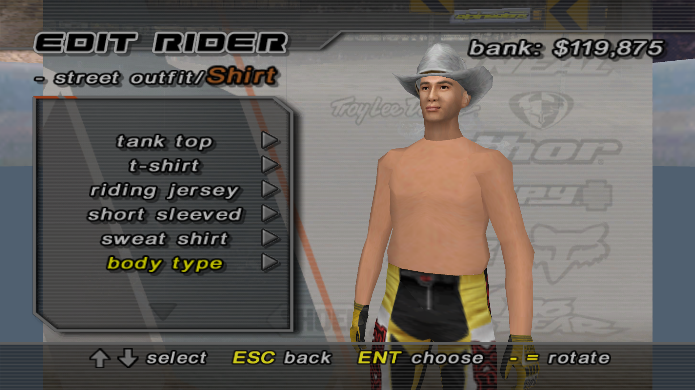
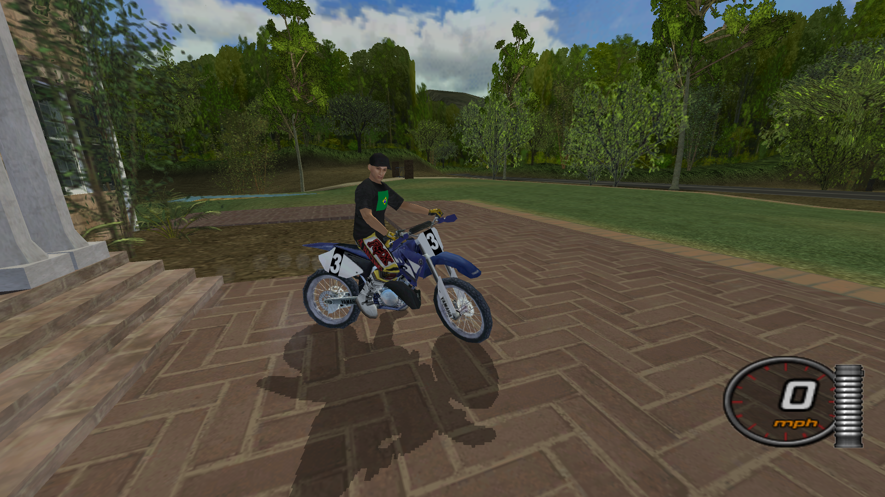

The definitive overhaul of the 2004 classic. We have modernized the engine, restored cut content, and implemented critical fixes to ensure the best possible experience on modern hardware. This is more than a mod—it is a complete evolution of the game you love.

Expanding the universe of MTX. We have imported iconic characters from other legendary titles, such as CJ from San Andreas, allowing for unique and fun crossovers that breathe new life into every race and freestyle session.

Ride with style on a massive selection of community-created bikes. From modern factory 4-strokes to classic 2-stroke legends, each bike features nice textures and accurate branding for a professional look on the track.

Personalize your world with custom team and sponsor logos. Our modding tools allows for high-fidelity branding, letting you represent your favorite real-world companies or create your own unique racing identity.

Look like a pro with a complete library of custom jerseys, pants, helmets, and boots. We’ve added the lots of new gear so you can hit the dirt with a fresh and modern aesthetic or just some crazy fun.

The legends are back. We have unlocked and restored the original pro roster, including riders that were previously hidden or cut from the game files, ensuring the history of the sport is fully represented.

Take the action beyond the track. With our expanded maps and community features, the Free Ride mode is the perfect playground for Roleplay (RP). Explore the terrain, meet up with friends online, and create your own stories in an open world.

Breaking the language barrier. We are dedicated to making MTX accessible to everyone by offering various translations for the UI and menus. We are currently working on adding even more languages to support our global community.